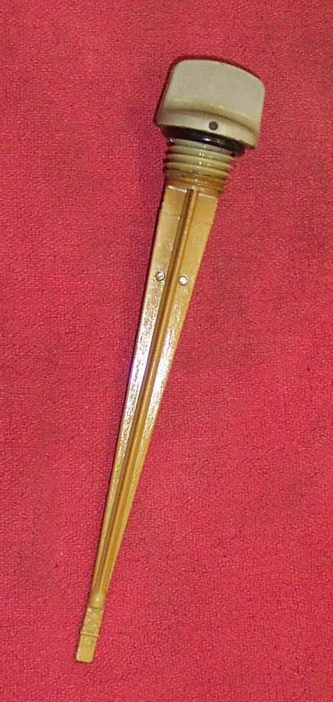
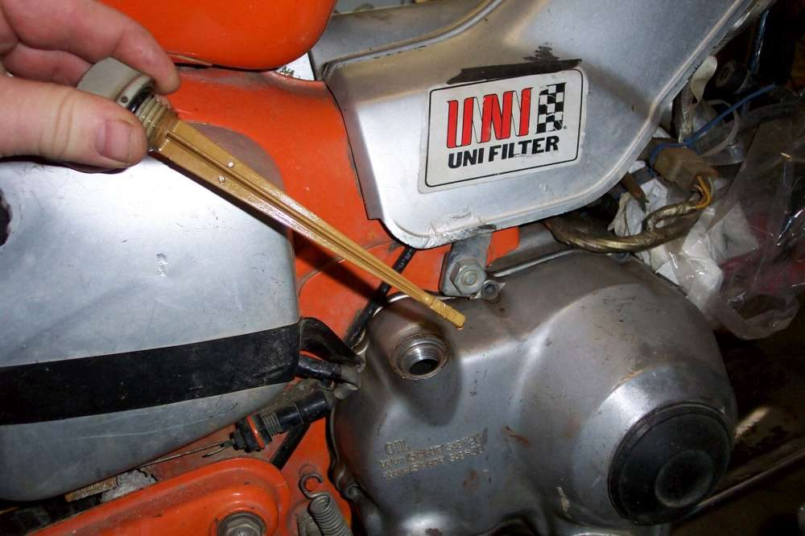

Engines show their oil level in one of three ways: a dipstick, a level plug, or a sight window. Most bikes have a dipstick. A dipstick screws or pushes into the side of the engine and has high and low marks at the lower end.
What it does
- Dipstick: wipe it, put it back (not screwed in unless the manual says so), remove it and read the level between the marks.
- Level plug: a threaded hole at the correct height. Oil is added until it runs out of the hole.
- Sight window: a clear window in the crankcase with high and low marks.
Signs it is worn or failing
- Dipstick marks worn off or rubbed out, or a bent stick, so the level cannot be read.
- Window plastic gone yellow or scratched: Oil sight window looks empty or the level is unclear.
- A seal or O-ring that leaks oil around the dipstick or plug.
When to replace it
Replace a dipstick that is bent or unreadable, a damaged O-ring, or a plug washer that has been crushed. A cracked window needs a workshop repair.
What to match when buying
- The exact dipstick for your engine. Length and marks differ between models.
- The plug thread, size and washer for a level plug.
- See Check the engine oil level and Check oil with a sight window or level plug.